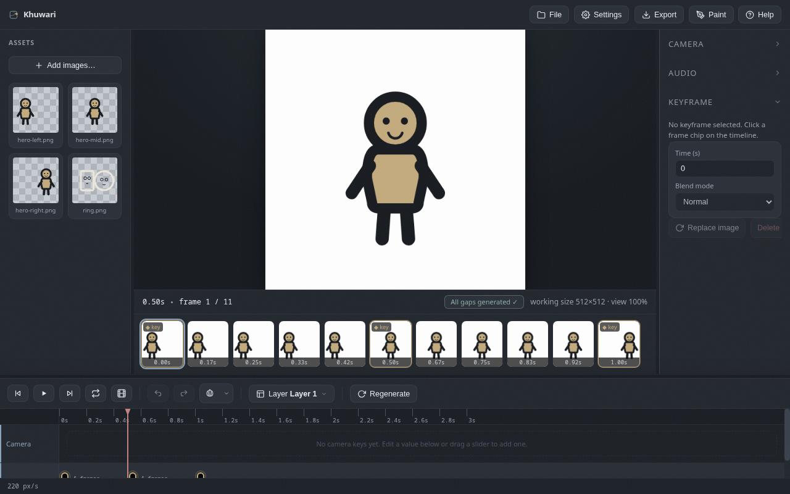
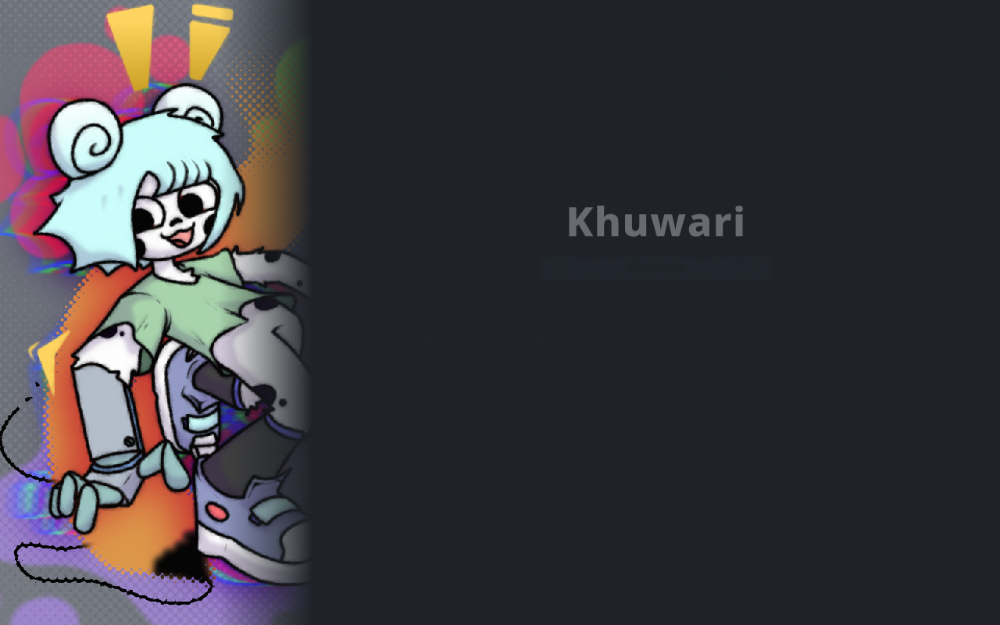

Getting started
What Khuwari is, how to open it, and how project files work.
What is Khuwari?
Khuwari is a browser based animation tool that fills in the frames between your keyframes using machine learning. You draw or import the important poses, place them on the timeline, and Khuwari generates everything in between.
The idea
- You provide the key poses, called keyframes.
- Khuwari generates the frames between them, called inbetweens.
- Everything runs in your browser. The model downloads once, and your art never leaves your machine.

Open the app
The easiest way is to open the app straight from the Khuwari website in your browser. No install, nothing to set up, everything runs in the tab. This is the recommended way to use Khuwari.
You can also host it yourself. Khuwari is a static site, so any file server works.
- Serve the project folder, for example with
python3 -m http.server 4000. - Open
http://localhost:4000in your browser.
From the start screen you can start a new project, load an existing .khuwari file, or try the bundled example project. The example project is the fastest way to see a finished animation. Load it and press play.

Project files
Projects save as .khuwari files that are easy to version and share.
- Use
Filein the toolbar, thenSave project (.khuwari)to download one. - Use
File, thenLoad projectto bring one back. - A project file holds your layers, keyframes, gaps and settings.